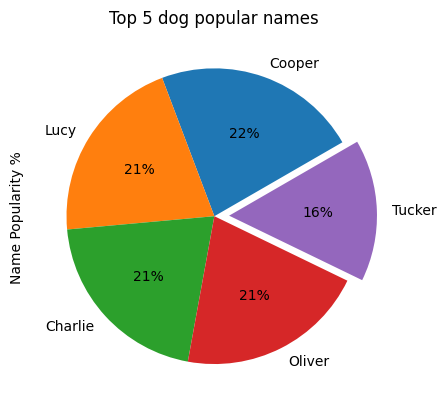

WeRateDogs üê∂ Twitter EDA üìä 2015 - 2017 üìÖ
Introduction
The WeRateDogs data analysis project was an insightful yet challenging
endeavor, particularly in the phases of assessing and cleaning the
data. The primary hurdles were the variability in data quality and the
diverse formats in which the information was presented.
Challenges
The most challenging phase in this project was the cleaning step #06,
which involved consolidating the doggo, floofer, pupper, and puppo
columns into a single column named characteristic. This task was
particularly demanding due to the presence of numerous NaN values and
the introduction of duplicates after employing the pd.melt() function.
Ensuring the accuracy of the name column by filtering out non-real
names embedded within text added another layer of complexity. The
assessment process, both visual and programmatic, was crucial in
identifying these issues and ensuring data quality. Developing robust
scripts to automate repetitive cleaning tasks was essential. Despite
being time-consuming, these scripts were vital for maintaining data
integrity, allowing for efficient and consistent data processing.
Ultimately, overcoming these challenges in the data cleaning phase was
instrumental in ensuring the reliability of the dataset. The
meticulous efforts in addressing NaN values, duplicates, and
inaccurate names laid a solid foundation for meaningful analysis,
leading to accurate insights and a deeper understanding of the
WeRateDogs data.
One of these challenges are to keep threads while dropping retweets. As there is no problem comes from threads. See the remarkable issue in wrangle_report

EDA
As for EDA it highlights many helpful things as Atticus as the
top-rated dog, Highest favorite count dog characteristic is Puppo, and
highest retweet count dog characteristic is Doggo. The trends in
engagement suggest that unique and engaging content significantly
influences social media metrics. Pupper is the most popular dog
characteristic. The top five dog names indicate a preference for
traditional and popular names. Further analysis could explore the
correlation between specific attributes and engagement metrics.

Conclusion
In conclusion, while the assessment and cleaning phases presented
significant obstacles, overcoming them was crucial for the project's
success. The efforts invested in these stages ensured the reliability
and validity of the analysis, ultimately leading to actionable
insights and a deeper understanding of the WeRateDogs data.